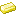
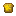
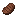

1.20.1 / (Addon) Firmalife / パン

パン
パン
パンを作るには、まずイーストを手に入れましょう。最初のイーストを手に入れるには、ドライフルーツを水の入った樽に入れ密封します。3日後、イーストスターターが形成されます。これ以降、イーストスターターは小麦粉の入った樽に入れ密封することで増やせます。イースト100MBに対して小麦粉1個で600MBのイーストができるため、とってもお得！
Recipe: firmalife:crafting/barley_dough
イーストスターター、甘味料、小麦粉を合わせて生地を作ることができます。
生地は通常通り調理してパンを作ることができます。
スライスしたパン


2

パンが焼き上がったらナイフで切り分けられます。
サンドイッチにしたり、バターやジャムを塗ったトーストにしたりできます。
トースト


